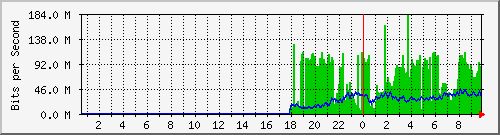
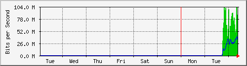
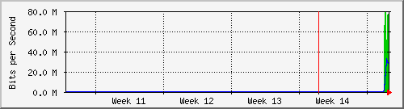

Dist_CCR1036 - if5
The statistics were last updated Wednesday, 8 April 2026 at 9:50,
at which time 'MikroTik-CCR1036' had been up for 58 days, 13:16:13.
`Daily' Graph (5 Minute Average)

|
Max |
Average |
Current |
| In: |
181.3 Mb/s (18.1%) |
65.7 Mb/s (6.6%) |
51.4 Mb/s (5.1%) |
| Out: |
44.6 Mb/s (4.5%) |
27.0 Mb/s (2.7%) |
38.1 Mb/s (3.8%) |
`Weekly' Graph (30 Minute Average)

|
Max |
Average |
Current |
| In: |
102.4 Mb/s (10.2%) |
64.0 Mb/s (6.4%) |
69.3 Mb/s (6.9%) |
| Out: |
40.8 Mb/s (4.1%) |
26.2 Mb/s (2.6%) |
35.4 Mb/s (3.5%) |
`Monthly' Graph (2 Hour Average)

|
Max |
Average |
Current |
| In: |
79.4 Mb/s (7.9%) |
56.9 Mb/s (5.7%) |
77.4 Mb/s (7.7%) |
| Out: |
32.5 Mb/s (3.2%) |
21.3 Mb/s (2.1%) |
26.9 Mb/s (2.7%) |
`Yearly' Graph (1 Day Average)

|
Max |
Average |
Current |
| In: |
0.0 b/s (0.0%) |
0.0 b/s (0.0%) |
0.0 b/s (0.0%) |
| Out: |
0.0 b/s (0.0%) |
0.0 b/s (0.0%) |
0.0 b/s (0.0%) |
| GREEN ### |
Incoming Traffic in Bits per Second |
| BLUE ### |
Outgoing Traffic in Bits per Second |